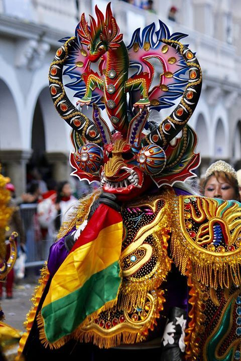

Tiwanaku
Civilización ancestral
✦ Plataforma Interactiva ✦
Historia y Cultura Boliviana
Civilización ancestral

Sede de Gobierno

Maravilla del mundo
Carnaval Patrimonial

Expresión folklórica
Herencia guaraní
Explora el calendario y selecciona una fecha marcada en morado para acceder a información histórica detallada sobre Bolivia.
Selecciona una fecha del calendario para descubrir datos fascinantes
Selecciona una fecha para ver imágenes